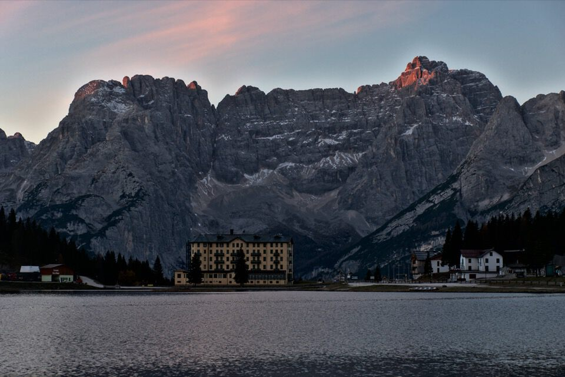
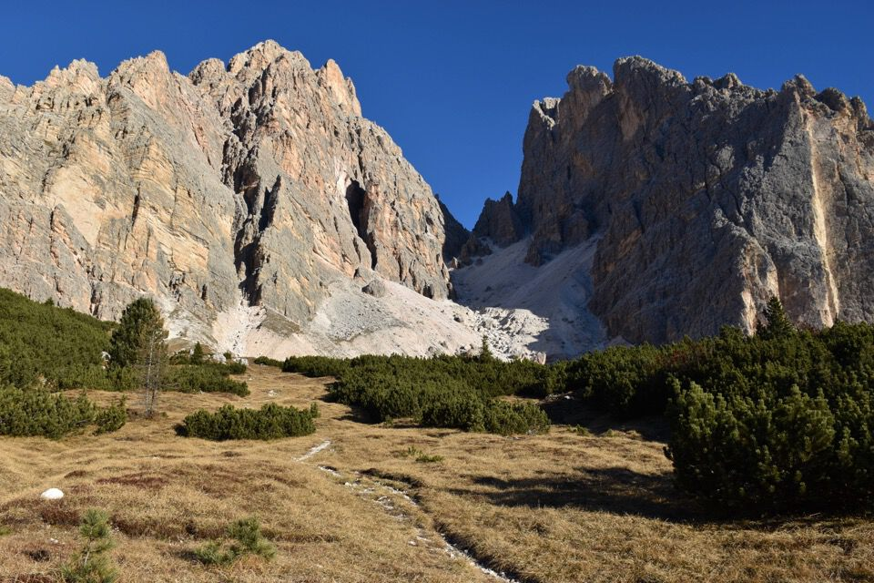
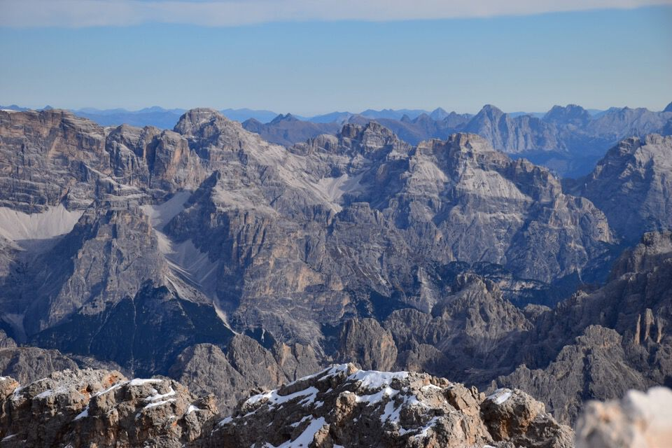
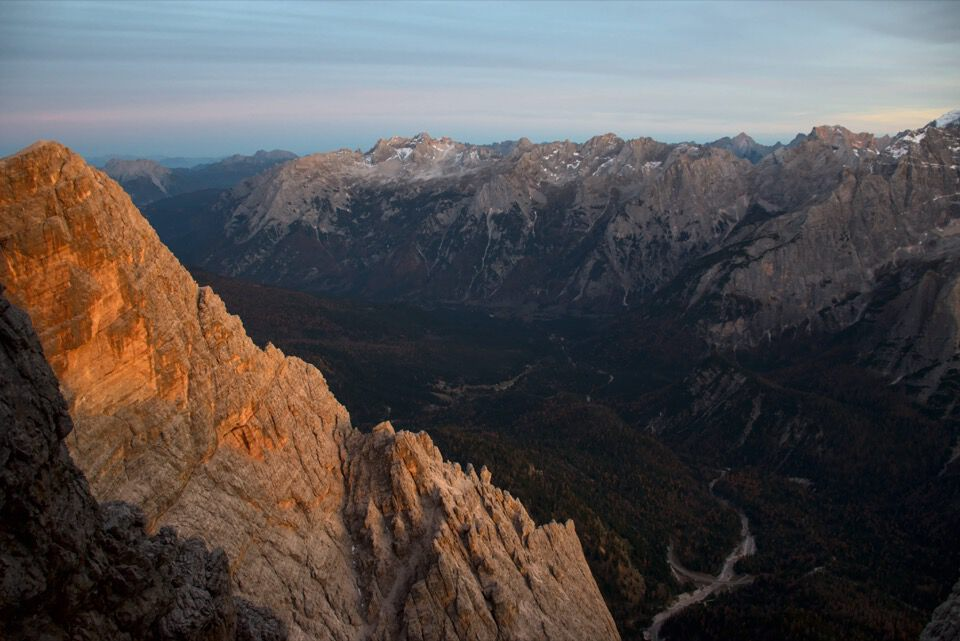

Novembre sulle crode alte e famose (la settimana prima eravamo sul Cimòn del Froppa): meglio inebriarsi di panorami prima del lungo inverno.
Leggi questo articolo sul leggendario Michl Innerkofel, Re del Cristallo, salito in cima più di trecento volte. Alla fine proprio il Cristallo lo tenne per sempre con sé, «...ma l’uscita di scena non avrebbe potuto essere più maestosa».
Arriviamo nei pressi di Passo Tre Croci giusto in tempo per l'alba: ho fermato la macchina mille volte per scattare delle foto (e mi tocca sentirmele...): niente da fare, foto discutibili che non possono rendere ciò che abbiamo visto.
Comunque l'immensità delle crode è impressionante. Fra qualche ora saremo lassù a vagare per quelle cenge!
Altra deviazione in macchina: Misurina, non c'ero mai stato prima.
I colori dell'alba infuocano il Cristallo e il Piz Popéna.
Ma si comincia anche a camminare: mezzo zoppo da una settimana per un dolore al ginocchio, che fare? Vediamo se andando sul Cristallo passa.
Le Grave di Cerigères.
I magnifici strapiombi gialli del Cristallo.
L'immensità delle crode è schiacciante.
Io faccio di testa mia salendo per un canalone con grossi massi perché si fa meno fatica... beh, c'è un motivo se la traccia va da un'altra parte...

Il delicato tratto finale per il Passo del Cristallo.
Direttamente dal Passo iniziamo a salire verso la cima.
Il famoso ponticello di legno: allo stato attuale solo un pazzo potrebbe passarci sopra.

Laggiù Passo Tre Croci da dove siamo partiti; speriamo avesse ragione il turista inglese a cui ho chiesto se lì si poteva parcheggiare...
La salita è magnifica ed esaltante.

Come può non esserlo con una giornata del genere?
L'arcigno spigolo sud che bene o male dovremo salire.
L'arrampicata è sempre facile, non si arriva al III, su buona roccia.
In vista della cresta sommitale: precipizi insondabili da entrambi i lati!

Ormai prossimi alla cima: ci precedono due trevigiani, le uniche persone che abbiamo incontrato (per fortuna!).
Cortina dalla cima.
Lavaredo.

Le magnifiche Dolomiti di Sesto.
In centro la Croda di Ligonto, a sx la Cima d'Ambàta col mitico Cadin del Biso.
Splendida luce sui Cadini di Misurina.
«Essa appare, a chi la guardi dalla Strada d'Alemagna, come spettacolosa piramide, poderosamente basata e snella in alto. Fra le pallide Dolomiti, quasi per accentuarne per contrasto il pallore, il rosso spunta qua e là: spunta qua e là una Crepa Rossa, un Monte Rosso, un Dente Rosso, una Forcella Rossa, una Lavina Rossa.
Ma non v'è, in tutta la zona dolomitica, una intera parete sanguinosa come questa!»
(A. Berti, Dolomiti Orientali I)
Panorama indimenticabile verso il lago di Landro.
Sono consapevole di rischiare di scadere nei cliché, ma in una giornata così è da non credere ai propri occhi.
Turrito e impressionante il vicino Piz Popéna: prima o poi...
Inutile dire che si vede tutto il versante nord delle Marmarole: qui il Cimòn del Froppa che abbiamo salito lo scorso fine settimana.
Qui invece il Monticello (un sogno!) e le cime di Vallonga.
L'Antelao oltre le Crode della Caccia Grande.
Foto ricordo.

È tempo di scendere.
Discese vertiginose.
Ci abbiamo messo una vita: vari pasticci con le doppie e il tempo è volato, ma che atmosfera ora con i colori del pomeriggio!
La discesa mi ha turbato: sembra ci siano salti enormi da ogni parte; non ci fossero gli omini non ci sarebbe modo di scendere.
A dirla tutta di omini ce ne sono anche troppi: in particolare in discesa abbiamo seguito una buona traccia con omini - che ora a posteriori so essere la via Grohmann originaria - che ci ha portato ad un pulpito sopra un immenso canalone, sotto all'impressionante colatoio-canalone che solca la parete sud-est del monte (vedi la seconda foto introduttiva). Peccato che questo mica l'abbiamo visto in salita: al di là vertiginose cenge tutte mangiate, ma dove diavolo siamo finiti?
Una delle mie foto più belle di sempre.
Il vantaggio delle giornate corte è di poter godere pienamente dell'alba e del tramonto sulle crode: esperienze complete difficili da dimenticare.
Miraggi di un mondo fatato oltre il Passo del Cristallo.
I Bastioni: c'è montagna più bella?
Abbiamo fatto notte: meglio che non scriva dove eravamo quando abbiamo dovuto accendere la pila.
Concludiamo in bellezza al buio con la piccozza su un pendio di ghiaia dura.